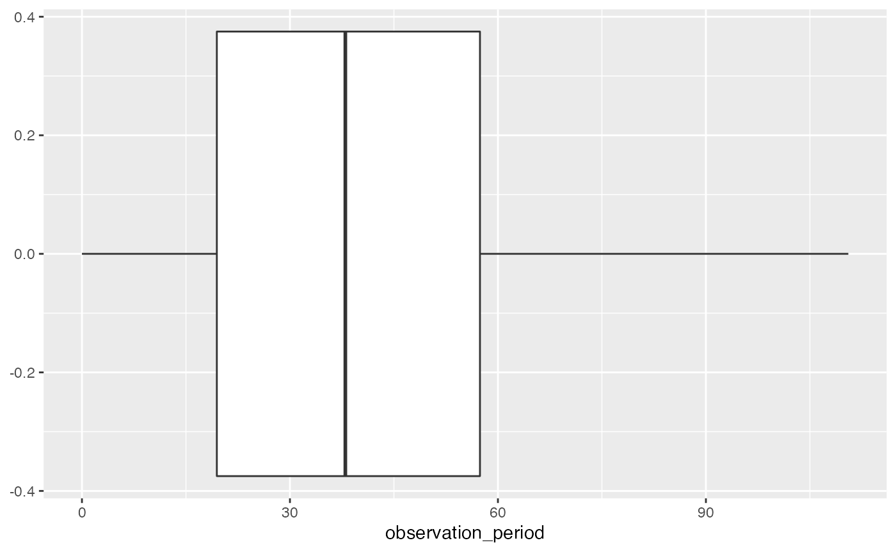

CDMConnector and dbplyr
CDMConnector_and_Dbplyr.RmdSet up
Creating the cdm reference
con <- DBI::dbConnect(duckdb::duckdb(), dbdir = eunomia_dir())
cdm <- cdm_from_con(con)
cdm
#> # OMOP CDM reference (tbl_duckdb_connection)
#>
#> Tables: person, observation_period, visit_occurrence, visit_detail, condition_occurrence, drug_exposure, procedure_occurrence, device_exposure, measurement, observation, death, note, note_nlp, specimen, fact_relationship, location, care_site, provider, payer_plan_period, cost, drug_era, dose_era, condition_era, concept, vocabulary, concept_relationship, concept_ancestor, drug_strengthUsing familiar Dplyr verbs
Mutate
cdm$person %>%
mutate(gender = ifelse(gender_concept_id == "8507", "Male",
ifelse(gender_concept_id == "8532", "Female", NA)
)) %>%
select("person_id","gender_concept_id", "gender") %>%
head(10)
#> # Source: SQL [10 x 3]
#> # Database: DuckDB 0.3.5-dev1410 [root@Darwin 21.6.0:R 4.2.0//var/folders/xx/01v98b6546ldnm1rg1_bvk000000gn/T//Rtmpvchima/cdm.duckdb]
#> person_id gender_concept_id gender
#> <dbl> <dbl> <chr>
#> 1 6 8532 Female
#> 2 123 8507 Male
#> 3 129 8507 Male
#> 4 16 8532 Female
#> 5 65 8532 Female
#> 6 74 8532 Female
#> 7 42 8532 Female
#> 8 187 8507 Male
#> 9 18 8532 Female
#> 10 111 8532 FemaleFilter
cdm$condition_occurrence %>%
filter(condition_concept_id == 317009)
#> # Source: SQL [5 x 16]
#> # Database: DuckDB 0.3.5-dev1410 [root@Darwin 21.6.0:R 4.2.0//var/folders/xx/01v98b6546ldnm1rg1_bvk000000gn/T//Rtmpvchima/cdm.duckdb]
#> condition_occurren…¹ perso…² condi…³ conditio…⁴ condition_start_d…⁵ conditio…⁶
#> <dbl> <dbl> <dbl> <date> <dttm> <date>
#> 1 27995 1655 317009 2004-09-29 2004-09-29 00:00:00 NA
#> 2 26333 1563 317009 1977-06-25 1977-06-25 00:00:00 NA
#> 3 47602 2830 317009 2006-08-11 2006-08-11 00:00:00 NA
#> 4 82008 4861 317009 1982-06-02 1982-06-02 00:00:00 NA
#> 5 80995 4804 317009 1997-03-23 1997-03-23 00:00:00 NA
#> # … with 10 more variables: condition_end_datetime <dttm>,
#> # condition_type_concept_id <dbl>, stop_reason <lgl>, provider_id <lgl>,
#> # visit_occurrence_id <dbl>, visit_detail_id <dbl>,
#> # condition_source_value <chr>, condition_source_concept_id <dbl>,
#> # condition_status_source_value <lgl>, condition_status_concept_id <dbl>, and
#> # abbreviated variable names ¹condition_occurrence_id, ²person_id,
#> # ³condition_concept_id, ⁴condition_start_date, ⁵condition_start_datetime, …
#> # ℹ Use `colnames()` to see all variable namesJoins
We can also join to merge tables of interest - e.g. person & observation_period
cdm$person %>%
select(person_id , gender_concept_id, year_of_birth) %>%
left_join(cdm$observation_period %>%
select(person_id, observation_period_start_date, observation_period_end_date),
by="person_id")
#> # Source: SQL [?? x 5]
#> # Database: DuckDB 0.3.5-dev1410 [root@Darwin 21.6.0:R 4.2.0//var/folders/xx/01v98b6546ldnm1rg1_bvk000000gn/T//Rtmpvchima/cdm.duckdb]
#> person_id gender_concept_id year_of_birth observation_period_sta…¹ observat…²
#> <dbl> <dbl> <dbl> <date> <date>
#> 1 2651 8532 1946 1946-09-18 2019-06-26
#> 2 2590 8507 1962 1962-10-16 2018-11-20
#> 3 2541 8532 1975 1975-09-29 2019-05-27
#> 4 2485 8532 1913 1913-07-02 2019-02-06
#> 5 2459 8532 1976 1976-06-21 2019-04-21
#> 6 2461 8507 1966 1966-11-01 2019-01-08
#> 7 2443 8507 1961 1961-12-29 2019-02-03
#> 8 2458 8532 1970 1970-05-24 2018-06-17
#> 9 2423 8532 1956 1956-10-22 2019-06-03
#> 10 2419 8507 1944 1944-10-20 2019-05-31
#> # … with more rows, and abbreviated variable names
#> # ¹observation_period_start_date, ²observation_period_end_date
#> # ℹ Use `print(n = ...)` to see more rowsCompute and collect
Compute
We can split multiple queries by running compute (to store information in temporary tables).
asthma_occurrences <- cdm$condition_occurrence %>%
filter(condition_concept_id == 317009)
# count of rows
asthma_occurrences %>%
tally()
#> # Source: SQL [1 x 1]
#> # Database: DuckDB 0.3.5-dev1410 [root@Darwin 21.6.0:R 4.2.0//var/folders/xx/01v98b6546ldnm1rg1_bvk000000gn/T//Rtmpvchima/cdm.duckdb]
#> n
#> <dbl>
#> 1 5
# count of people
asthma_occurrences %>%
select(person_id) %>%
distinct() %>%
tally()
#> # Source: SQL [1 x 1]
#> # Database: DuckDB 0.3.5-dev1410 [root@Darwin 21.6.0:R 4.2.0//var/folders/xx/01v98b6546ldnm1rg1_bvk000000gn/T//Rtmpvchima/cdm.duckdb]
#> n
#> <dbl>
#> 1 5Collect
collect brings the query result into R as dataframe.
cdm$condition_occurrence %>%
filter(condition_concept_id == 317009) %>%
collect() %>%
glimpse()
#> Rows: 5
#> Columns: 16
#> $ condition_occurrence_id <dbl> 27995, 26333, 47602, 82008, 80995
#> $ person_id <dbl> 1655, 1563, 2830, 4861, 4804
#> $ condition_concept_id <dbl> 317009, 317009, 317009, 317009, 317009
#> $ condition_start_date <date> 2004-09-29, 1977-06-25, 2006-08-11, 1982…
#> $ condition_start_datetime <dttm> 2004-09-29, 1977-06-25, 2006-08-11, 1982…
#> $ condition_end_date <date> NA, NA, NA, NA, NA
#> $ condition_end_datetime <dttm> NA, NA, NA, NA, NA
#> $ condition_type_concept_id <dbl> 32020, 32020, 32020, 32020, 32020
#> $ stop_reason <lgl> NA, NA, NA, NA, NA
#> $ provider_id <lgl> NA, NA, NA, NA, NA
#> $ visit_occurrence_id <dbl> 110995, 104703, 187767, 323415, 319587
#> $ visit_detail_id <dbl> 0, 0, 0, 0, 0
#> $ condition_source_value <chr> "195967001", "195967001", "195967001", "…
#> $ condition_source_concept_id <dbl> 317009, 317009, 317009, 317009, 317009
#> $ condition_status_source_value <lgl> NA, NA, NA, NA, NA
#> $ condition_status_concept_id <dbl> 0, 0, 0, 0, 0Putting it all together
Use the cdm object to quickly generate statistics from a CDM and interactively explore the data.
Histogram of year of birth
cdm$person %>%
select(year_of_birth) %>%
collect() %>%
ggplot() +
geom_histogram(aes(year_of_birth))
Boxplot for length of observation periods
cdm$observation_period %>%
select(observation_period_start_date, observation_period_end_date) %>%
mutate(observation_period = (observation_period_end_date - observation_period_start_date)/365,25) %>%
collect() %>%
ggplot() +
geom_boxplot(aes(observation_period))
Behind the scenes
Use show_query to inspect the sql
cdm$person %>%
tally() %>%
show_query()
#> <SQL>
#> SELECT COUNT(*) AS "n"
#> FROM "person"
cdm$person %>%
summarise(median(year_of_birth))%>%
show_query()
#> <SQL>
#> SELECT PERCENTILE_CONT(0.5) WITHIN GROUP (ORDER BY "year_of_birth") AS "median(year_of_birth)"
#> FROM "person"
cdm$person %>%
mutate(gender = ifelse(gender_concept_id == "8507", "Male",
ifelse(gender_concept_id == "8532", "Female", NA)
))%>%
show_query()
#> <SQL>
#> SELECT
#> *,
#> CASE WHEN ("gender_concept_id" = '8507') THEN 'Male' WHEN NOT ("gender_concept_id" = '8507') THEN (CASE WHEN ("gender_concept_id" = '8532') THEN 'Female' WHEN NOT ("gender_concept_id" = '8532') THEN NULL END) END AS "gender"
#> FROM "person"What would this look like for other dbms?
The above was specific to duckdb which we have been using in this example. But what would this look like for other database management systems?
library(dbplyr)
person <- cdm$person %>% collect()
tbl_lazy(person, con = simulate_sqlite()) %>%
tally()
tbl_lazy(person, con = simulate_sqlite()) %>%
summarise(median(year_of_birth, na.rm = TRUE))
tbl_lazy(person, con = simulate_sqlite()) %>%
mutate(gender = case_when(
gender_concept_id == "8507" ~ "Male",
gender_concept_id == "8532" ~ "Female",
TRUE ~ NA_character_)
)
tbl_lazy(person, con = simulate_postgres()) %>%
tally()
tbl_lazy(person, con = simulate_postgres()) %>%
summarise(median(year_of_birth))
tbl_lazy(person, con = simulate_postgres()) %>%
mutate(gender = case_when(
gender_concept_id == "8507" ~ "Male",
gender_concept_id == "8532" ~ "Female",
NA_character_)
)
tbl_lazy(person, con = simulate_redshift()) %>%
tally()
tbl_lazy(person, con = simulate_redshift()) %>%
summarise(median(year_of_birth))
tbl_lazy(person, con = simulate_redshift()) %>%
mutate(gender = case_when(
gender_concept_id == "8507" ~ "Male",
gender_concept_id == "8532" ~ "Female",
NA_character_)
)
tbl_lazy(person, con = simulate_snowflake()) %>%
tally()
tbl_lazy(person, con = simulate_snowflake()) %>%
summarise(median(year_of_birth))
tbl_lazy(person, con = simulate_snowflake()) %>%
mutate(gender = case_when(
gender_concept_id == "8507" ~ "Male",
gender_concept_id == "8532" ~ "Female",
NA_character_)
)
tbl_lazy(person, con = simulate_mysql()) %>%
tally()
tbl_lazy(person, con = simulate_mysql()) %>%
summarise(median(year_of_birth))
tbl_lazy(person, con = simulate_mysql()) %>%
mutate(gender = case_when(
gender_concept_id == "8507" ~ "Male",
gender_concept_id == "8532" ~ "Female",
NA_character_)
)
DBI::dbDisconnect(con, shutdown = TRUE)Connection Examples
Postgres
con <- DBI::dbConnect(RPostgres::Postgres(),
dbname = Sys.getenv("CDM5_POSTGRESQL_DBNAME"),
host = Sys.getenv("CDM5_POSTGRESQL_HOST"),
user = Sys.getenv("CDM5_POSTGRESQL_USER"),
password = Sys.getenv("CDM5_POSTGRESQL_PASSWORD"))
cdm <- cdm_from_con(con, cdm_schema = Sys.getenv("CDM5_POSTGRESQL_CDM_SCHEMA"), select = tbl_group("vocab"))
DBI::dbDisconnect(con)SQL Server
Using odbc with SQL Server requires driver setup described here.
con <- DBI::dbConnect(odbc::odbc(),
Driver = "ODBC Driver 18 for SQL Server",
Server = Sys.getenv("CDM5_SQL_SERVER_SERVER"),
Database = Sys.getenv("CDM5_SQL_SERVER_CDM_DATABASE"),
UID = Sys.getenv("CDM5_SQL_SERVER_USER"),
PWD = Sys.getenv("CDM5_SQL_SERVER_PASSWORD"),
TrustServerCertificate="yes",
Port = 1433)
cdm <- cdm_from_con(con, cdm_schema = c("CDMV5", "dbo"), select = tbl_group("vocab"))
DBI::dbDisconnect(con)Redshift
This is almost identical to Postgres.
con <- DBI::dbConnect(RPostgres::Redshift(),
dbname = Sys.getenv("CDM5_REDSHIFT_DBNAME"),
host = Sys.getenv("CDM5_REDSHIFT_HOST"),
port = Sys.getenv("CDM5_REDSHIFT_PORT"),
user = Sys.getenv("CDM5_REDSHIFT_USER"),
password = Sys.getenv("CDM5_REDSHIFT_PASSWORD"))
cdm <- cdm_from_con(con, cdm_schema = Sys.getenv("CDM5_REDSHIFT_CDM_SCHEMA"), select = tbl_group("vocab"))
DBI::dbDisconnect(con)